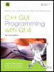

|  | | | C++ GUI Programming with Qt 4, Second Edition | | by Jasmin Blanchette; Mark Summerfield |
| | Publisher: Prentice Hall | | Pub Date: February 04, 2008 | Print ISBN-10: 0-13-235416-0 | Print ISBN-13: 978-0-13-235416-5 | eText ISBN-10: 0-13-714397-4 | eText ISBN-13: 978-0-13-714397-9 |
| | Pages: 752 |
| |